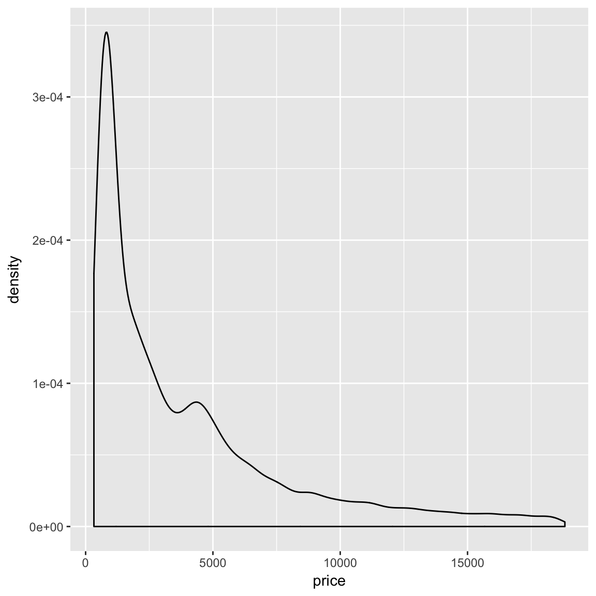
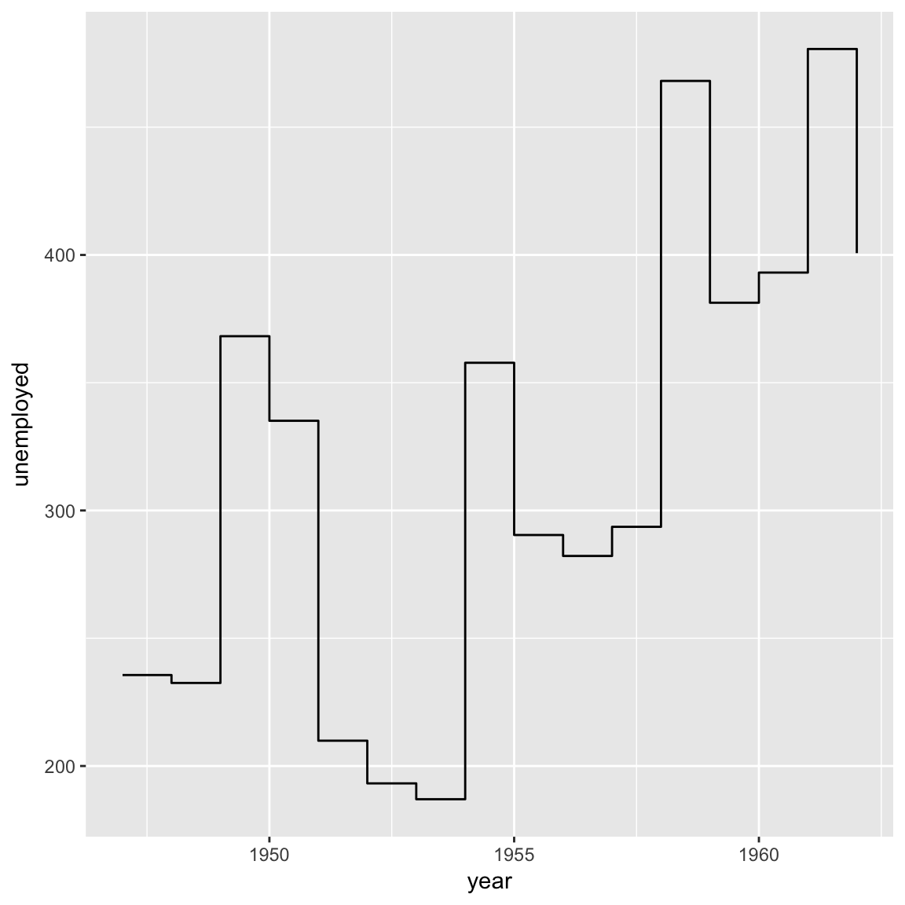

DATASETS
MTCARS
The data was extracted from the 1974 Motor Trend US magazine, and comprises fuel consumption and 10 aspects of automobile design and performance for 32 automobiles (1973-74 models).
- A data frame with 32 observations on 11 variables.
- mpg Miles/(US) gallon
- cyl Number of cylinders
- mpg Miles/(US) gallon
- disp Displacement (cu.in.)
- hp Gross horsepower
- drat Rear axle ratio
- wt Weight (1000 lbs)
- qsec 1/4 mile time
- vs V/S
- am Transmission (0 = automatic, 1 = manual)
- gear Number of forward gears
- carb Number of carburetors
** Tidy mtcars **
# mtcars datasets is almost tidy we have just to coerce it into a
# data.table, setting keep.rownames=T to get the information stored in the
# rownames (the car name). But we we do that the default name is 'rn', so we
# have to change the'rn' to 'name'
mtcars <- data.table(datasets::mtcars, keep.rownames = T) %>% setnames("rn",
"name")DIAMONDS
A dataset containing the prices and other attributes of almost 54,000 diamonds. The variables are as follows:
- A data frame with 53940 rows and 10 variables:
- price price in US dollars
- carat weight of the diamond (0.2 - 5.01)
- cut quality of the cut (Fair, Good, Very Good, Premium, Ideal)
- color diamond colour, from J (worst) to D (best)
- clarity a measurement of how clear the diamond is (I1 (worst), SI1, SI2, VS1, VS2, VVS1, VVS2, IF (best))
- x length in mm (0 - 10.74)
- y width in mm (0 - 58.9)
- z depth in mm (0 - 31.8)
- depth total depth percentage = z / mean(x, y) = 2 * z / (x + y) (43 - 79)
- table width of top of diamond relative to widest point (43 - 95)
TOOLTHGROWH
The Effect of Vitamin C on Tooth Growth in Guinea Pigs The response is the length of odontoblasts (cells responsible for tooth growth) in 60 guinea pigs. Each animal received one of three dose levels of vitamin C (0.5, 1, and 2 mg/day) by one of two delivery methods, (orange juice or ascorbic acid (a form of vitamin C and coded as VC).
- A data frame with 60 rows and 3 variables:
- len (numeric) Tooth lenght
- supp (factor) Supplement type (VC or OJ).
- dose (numeric) Dose in milligrams/day
AESTHETICS
AESTHETICS VS ATTRIBUTES
Attributes are used to change the way something look (shape,color,alpha,etc).
Aesthetics are used to map variables into attribues.
1. Plot this graph
Use mtcars dataset. Map wt to x and mpg to y (set the aesthetics in the ggplot function, not in the geometric function )
ggplot(mtcars, aes(x = wt, y = mpg)) + geom_point()2. Increase the size of points
(copy and paste the ggplot code and set the size to 5)
ggplot(mtcars, aes(x = wt, y = mpg, size = 5)) + geom_point()3. Change the color of points
(copy and paste the ggplot code and set the color to ‘hotpink’)
there’s an immense amount of colors for you to choose , click to see all of them r colors
ggplot(mtcars, aes(x = wt, y = mpg, size = 5, color = "hotpink")) + geom_point()4. Up to know we have changed attributes of the plot.
Now we are going to add a new dimension to the plot. Right now the plot has two dimension (mpg and wt).
To add a new dimension, or better said, a new aesthetic, map the variable gear to the attribute color
ggplot(mtcars, aes(x = wt, y = mpg, size = 5, color = gear)) + geom_point()CATEGORICAL AESTHETICS
5. CATEGORICAL AESTHETICS. Force the new aesthetic to be a categorical variable, a factor.
To do so, use the function ‘factor’ when setting the color aesthetic
ggplot(mtcars, aes(x = wt, y = mpg, size = 5, color = factor(gear))) + geom_point()SHARED AESTHETICS VS GEOM-SPECIFIC AESTHETICS
6. Add a new geometric to plot a loess model sharing all the aesthetics set
use the geom_smooth function
ggplot(mtcars, aes(x = wt, y = mpg, size = 5, color = factor(gear))) + geom_point() +
geom_smooth()7. Geom-specific aesthetic
As we can see in the plot above We have made a model for each year, and the size of the line is so big.
8. Plot his graph
Use mtcars dataset. Map cyl to x and hp to y (set the aesthetics in the ggplot function, not in the geometric function )
mtcars %>% ggplot(aes(cyl, hp)) + geom_point()9. Aesthetics and attributes
Add a geom-specific aesthetic to map the variable gear with the attribute color.
And add also the attribute size. Set size = 3
mtcars %>% ggplot(aes(cyl, hp)) + geom_point(aes(color = factor(gear)), size = 3)10.Jitter position
Set the position argument to ‘jitter’
mtcars %>% ggplot(aes(cyl, hp)) + geom_point(aes(color = factor(gear)), size = 3,
position = "jitter")11. Change the default arguments of jitter position
To do so you need to use the jitter position (or the jitter geom)
set height = 0 and width =0.2
mtcars %>% ggplot(aes(cyl, hp)) + geom_point(aes(color = factor(gear)), size = 3,
position = position_jitter(width = 0.2, height = 0))#### 12. Plot this graph ##### Use mtcars dataset. Map gear to x and use bar geometric
mtcars %>% ggplot(aes(x = gear)) + geom_bar()13. Add a new aesthetic.
Map carb to fill aesthetic
mtcars %>% ggplot(aes(x = gear, fill = carb)) + geom_bar()
14. Factor aesthetic
We need to force carb to be a factor for the aesthetic to be visible
mtcars %>% ggplot(aes(x = gear, fill = factor(carb))) + geom_bar()
15. Check default position
Set position argument to ‘stack’ to check that nothing changes
mtcars %>% ggplot(aes(x = gear, fill = factor(carb))) + geom_bar(position = "stack")16. Fill position
Create a 100% stacked barplot by changing the position to ‘fill’
mtcars %>% ggplot(aes(x = gear, fill = factor(carb))) + geom_bar(position = "fill")17. Dodge position
Preserves the vertical position of an geom while adjusting the horizontal position.
mtcars %>% ggplot(aes(x = gear, fill = factor(carb))) + geom_bar(position = "dodge")18. Plot this graph
Use mtcars dataset. Map disp to x mpg to y. You have to use two geoms
ggplot(data = mtcars, aes(x = disp, y = mpg)) + geom_point() + geom_smooth()19. Attributes and Aesthetics
Aesthethics. Use the color aesthetic to add the variable gear to the plot
Attributes Change the color of the line to black and increase the size of points to 3
Remove standard error (shaded area) (hint geom_smooth has a parameter called se)
ggplot(data = mtcars, aes(x = disp, y = mpg)) + geom_point(aes(color = factor(gear)),
size = 5) + geom_smooth(se = F, color = "black")20. Scales
Change the color scale manually. Coerce the colors to be ???red???, ???green??? and ???blue???to 3
ggplot(data = mtcars, aes(x = disp, y = mpg)) + geom_point(aes(color = factor(gear),
size = 5)) + geom_smooth(se = F, color = "black") + scale_color_manual(values = c("red",
"green", "blue"))21. Add a new aesthetic
Use the size aesthetic to add the categorical variable carb
ggplot(data = mtcars, aes(x = disp, y = mpg)) + geom_point(aes(color = factor(gear),
size = factor(carb))) + geom_smooth(se = F, color = "black") + scale_color_manual(values = c("red",
"green", "blue"))22. Highlight the difference of carb
Change the range of the size scale, set it to 1-10
ggplot(data = mtcars, aes(x = disp, y = mpg)) + geom_point(aes(color = factor(gear),
size = factor(carb))) + geom_smooth(se = F, color = "black") + scale_color_manual(values = c("red",
"green", "blue")) + scale_size_discrete(range = c(1, 10))GEOMETRICS
23. Plot this graph
Use diamonds dataset. Map price to x and create something like and histogram but plotting an area.
ggplot(diamonds, aes(x = price)) + geom_area(stat = "bin")24. Plot a density of the price
ggplot(diamonds, aes(x = price)) + geom_density() #### 25. Plot the count instead of the density
ggplot(diamonds, aes(x = price)) + geom_density(aes(y = ..count..))26. Plot the count but using the triangular kernel
ggplot(diamonds, aes(x = price)) + geom_density(kernel = "rectangular", aes(y = ..count..))27.Use a dotplot
ggplot(diamonds, aes(x = price)) + geom_dotplot()28.We must reduce the dotsize. Set the attribute dotsize = 100/nrow(diamonds)
When the dataset is so big, the dotplot do not add information
ggplot(diamonds, aes(x = price)) + geom_dotplot(dotsize = 100/nrow(diamonds))29.In this case we prefer to use a simple histogram
ggplot(diamonds, aes(x = price)) + geom_histogram()
30.Or a freqpoly (an histogram plotted using a line)
ggplot(diamonds, aes(x = price)) + geom_freqpoly()31. Plot the count of each color using diamonds dataset
ggplot(diamonds, aes(cut)) + geom_bar()#### 32. Add the aesthetic fill to map the variable color
ggplot(diamonds, aes(cut)) + geom_bar(aes(fill = factor(color)))33. Create a 100% stacked bar changing the default position
ggplot(diamonds, aes(cut)) + geom_bar(aes(fill = factor(color)), position = "fill")34. Plot this famouse graph.
Use the diamonds dataset and make a scatter plot of price vs carat
ggplot(diamonds, aes(carat, price)) + geom_point()35. Limit the x axis to 3 using a scale function
ggplot(diamonds, aes(carat, price)) + geom_point() + scale_x_continuous(limits = c(NA,
3))#### 36. Use jitter instead of points and set height = 0.5,width = 0.5. ###### You must also set the attribute alpha to 0.1 to avoid overlapping
ggplot(diamonds, aes(carat, price)) + geom_jitter(height = 0.5, width = 0.5,
alpha = 0.1) + scale_x_continuous(limits = c(NA, 3))37. Add quantiles 25%,50% and 75%
ggplot(diamonds, aes(carat, price)) + geom_jitter(height = 0.5, width = 0.5,
alpha = 0.1) + geom_quantile(size = 2) + scale_x_continuous(limits = c(NA,
3))38. Limit the y axis by using the maximum price in the diamonds dataset.
ggplot(diamonds, aes(carat, price)) + geom_jitter(height = 0.5, width = 0.5,
alpha = 0.1) + geom_quantile(size = 2) + scale_y_continuous(limits = c(NA,
max(diamonds$price))) + scale_x_continuous(limits = c(NA, 3))39.Visualize the distribution of price and carat using a rug plot (set alpha = 0.01 to avoid overlapping)
ggplot(diamonds, aes(carat, price)) + geom_jitter(height = 0.5, width = 0.5,
alpha = 0.1) + geom_quantile(size = 2) + geom_rug(alpha = 0.01) + scale_y_continuous(limits = c(NA,
max(diamonds$price))) + scale_x_continuous(limits = c(NA, 3))40. Add a smooth model to see the relation between price and carat
Set attribute color = ‘red’ and zie = 2
ggplot(diamonds, aes(carat, price)) + geom_jitter(height = 0.5, width = 0.5,
alpha = 0.1) + geom_quantile(size = 2) + geom_rug(alpha = 0.01) + geom_smooth(size = 2,
color = "red") + scale_y_continuous(limits = c(NA, max(diamonds$price))) +
scale_x_continuous(limits = c(NA, 3))
41. Plot thi graph (based on the previously created data.frame)
diamonds <- as.data.table(diamonds)
df = diamonds[,.(price=mean(price)),by=color]
ggplot(df,aes(color,price)) + geom_bar(stat='identity')42. Add the color aesthetic
df = diamonds[,.(price=mean(price)),by=color]
ggplot(df,aes(color,price)) + geom_bar(stat='identity',aes(fill=factor(color)))43. We can get more information without creating an auxiliar dataset.
Plot this graph using the diamonds dataset and a boxplot geometric
ggplot(diamonds,aes(color,price)) + geom_boxplot(aes(fill=factor(color)))44. Based on the following dataset. Create a dotplot
Remember that the argument binaxis must be set to ‘y’
diamonds = as.data.table(diamonds)
df = diamonds[,.(price=mean(price)),by=.(cut,color,clarity)]
ggplot(df,aes(color,price))+ geom_dotplot(binaxis = 'y', dotsize = 0.7, aes(fill=color), stackdir = 'center')45. To create a plot with the same information, we don’t need to create an auxliar dataset
Plot this graph using the diamonds dataset and a violin geometric
ggplot(diamonds,aes(color,price)) + geom_violin(aes(fill=factor(color)))46. Plot this graph. As you can see, it has been made using two categorical variables
diamonds %>% ggplot() + geom_jitter(aes(clarity,cut))
47. Add two new aesthetics
Map the carat variable in the alpha attribute and the variable price in the color attribute
diamonds %>% ggplot() + geom_jitter(aes(clarity,cut,alpha=carat,color=price)) 48. Change the range of the alpha aesthetic using a scale function
Change the default theme, use theme_minimal
diamonds %>% ggplot() + geom_jitter(aes(clarity,cut,alpha=carat,color=price)) +
scale_alpha_continuous(range = c(0,0.7))+
theme_minimal()49. Plot this graph.
Use diamonds dataset, map carat to x and price to y and use hex geometric (set alpha to 0.8)
diamonds %>% ggplot(aes(carat,price)) + geom_hex(alpha=0.8)50. Add a contours.
set color = ‘red’ to make it more visible
diamonds %>% ggplot(aes(carat,price)) + geom_hex(alpha=0.8) + geom_density2d(color='red')51. Change geom_text with geom_point
set alpha to 0.005 to be ableo to see somthing
diamonds %>% ggplot(aes(carat,price)) + geom_point(alpha=0.005) + geom_density2d(color='red')52. Using the following dataset. Plot a line to know the trend of the unenmployment
# CREATE A US ECONOMIC DATASET
df <- as.data.table(datasets::longley)
df[,year := as.integer(rownames(datasets::longley))]
colnames(df) <- gsub('\\.','_',tolower(colnames(df)))
# plot the line
ggplot(df)+ geom_line(aes(y=unemployed,x=year))53. Plot an area instead
ggplot(df)+ geom_area(aes(y=unemployed,x=year))
54. Plot an step line
ggplot(df)+ geom_step(aes(y=unemployed,x=year))
55. Create the model an plot a crossbar
diamonds <- as.data.table(ggplot2::diamonds)
diamonds %>%
.[,unique(color)] %>%
as.character() %>%
map(~diamonds[color==.]) %>%
map(~lm(formula = log(price)~log(carat),data=.)) %>%
map(coefficients) %>%
map(as.data.frame) %>%
rbindlist() %>%
as.data.table() %>%
setnames(.,names(.),'coef') %>%
.[,type := rep(c('intercept','log_carat'),diamonds[,uniqueN(color)])] %>%
.[,color:=unlist(map(as.character(diamonds[,unique(color)]),~rep(.,2)))] %>%
dcast(color~type,value.var='coef') %>%
merge(diamonds,.,by='color') %>%
.[,price_hat := exp(log_carat * log(carat) + intercept)]->diamonds
#ggplot(diamonds,aes(price,price_hat))+ geom_point(alpha=0.3,aes(color=color))+geom_smooth()
df <- diamonds[,.(fit=mean(price_hat),sd = mean(sqrt((price_hat-price)**2))), by= color]
ggplot(df,aes(color,fit,ymin=fit-sd,ymax=fit+sd))+
geom_crossbar(aes(fill=color))56. Plot this graph
Use geom bar (stat =‘identity’) and add an error bar
ggplot(df,aes(color,fit,ymin=fit-sd,ymax=fit+sd))+
geom_bar(stat='identity',aes(fill=color)) +
geom_errorbar()57. Use a point-range instead of an error bar
ggplot(df,aes(color,fit,ymin=fit-sd,ymax=fit+sd))+
geom_bar(stat='identity',aes(fill=color)) +
geom_pointrange()DATASETS
58. Plot this graph
59. Split the plot using the categorical variable color
60. Create a grid of plot using the variables color in columns and cut in rows.
61. Create a grid of plot using the variables color in columns and cut in rows.
COORDINATES
62. Plot this graph.
Hints theta = ‘y’, x=’’
63. Stat transformation using coordinate
sqrt in x and log10 in price
64. Flipped violins
THEMES
65. Based on this plot. Add a theme to make it look more classic.
gg <- ggplot(ToothGrowth, aes(factor(dose), len, fill = factor(dose))) + geom_violin(trim = FALSE) +
stat_summary(fun.data = function(x) c(y = mean(x), ymin = mean(x) - sd(x),
ymax = mean(x) + sd(x))) + scale_fill_brewer(palette = "Blues")
gg + theme_classic()66. Add the title “Tooth Length by Dose” and Subtitle “Vitamin C Complex”
gg + theme_classic() + ggtitle("Tooth Length by Dose", subtitle = "Vitamin C Complex")67. Add a new Label for X Axis “Length”, a new one for Y Axis “Dose (mg)”, and a new title for the legend “Dose”
gg + theme_classic() + ggtitle("Tooth Length by Dose", subtitle = "Vitamin C Complex") +
labs(y = "Length", x = "Dose (mg)", fill = "Dose")68. Plot the title and subtitle in the center
gg + theme_classic() + ggtitle("Tooth Length by Dose", subtitle = "Vitamin C Complex") +
labs(y = "Length", x = "Dose (mg)", fill = "Dose") + theme(plot.title = element_text(hjust = 0.5),
plot.subtitle = element_text(hjust = 0.5))69. Increase the base size and set the base family = ‘serif’
gg + theme_classic(base_size = 15, base_family = "serif") + ggtitle("Tooth Lenght by Dose",
subtitle = "Vitamin C Complex") + labs(y = "Length", x = "Dose (mg)", fill = "Dose") +
theme(plot.title = element_text(hjust = 0.5), plot.subtitle = element_text(hjust = 0.5))70. Change the aspect ratio of the coordinate system. Fix the ratio to 1/15
gg + theme_classic(base_size = 15, base_family = "serif") + ggtitle("Tooth Lenght by Dose",
subtitle = "Vitamin C Complex") + labs(y = "Length", x = "Dose (mg)", fill = "Dose") +
theme(plot.title = element_text(hjust = 0.5), plot.subtitle = element_text(hjust = 0.5)) +
coord_fixed(ratio = 1/15)